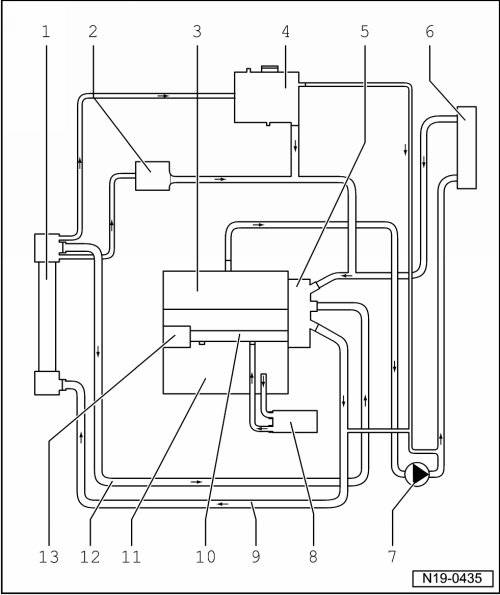

Cooling System: Diagrams
Coolant Hose Connection Diagram

1 Radiator
2 Oil cooler
• For transmission oil
3 Cylinder head
4 Expansion tank
5 Coolant thermostat housing
6 Heater unit heat exchanger
7 After-run coolant pump (V51)
8 Oil cooler
• For engine oil
9 Upper coolant hose
10 Coolant line
11 Cylinder block
12 Lower coolant hose
13 Coolant pump